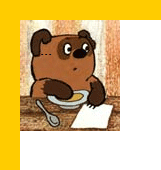
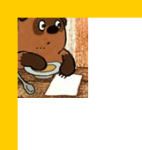

background-origin
Свойство background-origin определяет область позиционирования фонового рисунка. Это свойство не применяется, когда значение background-attachment задано как fixed.
Краткая информация
| Значение по умолчанию | padding-box |
|---|---|
| Наследуется | Нет |
| Применяется | Ко всем элементам |
Синтаксис
background-origin: [padding-box | border-box | content-box]
[, [padding-box | border-box | content-box]]*Значения
- padding-box
- Фон позиционируется относительно края элемента с учетом толщины границы.
- border-box
- Фон позиционируется относительно границы, при этом линия границы может перекрывать изображение.
- content-box
- Фон позиционируется относительно содержимого элемента.
Значений может быть несколько (для каждого из множественных фоновых рисунков), при этом значения разделяются между собой запятой.
Результат использования значений свойства background-origin для элемента с рамкой толщиной 20 пикселов показан на рис. 1.
|  |  | |
| padding-box | border-box | content-box |
Рис. 1. Результат применения разных значений
Пример
<!DOCTYPE html>
<html>
<head>
<meta charset="utf-8">
<title>background-origin</title>
<style>
.example {
border: 20px solid #fc0;
padding: 20px;
height: 200px;
background: url(images/figure.jpg) no-repeat;
background-origin: content-box;
}
</style>
</head>
<body>
<div class="example">...</div>
</body>
</html>Объектная модель
Объект.style.backgroundOrigin
Примечание
Если фон задан один, а значений background-origin несколько, то браузеры покажут разное поведение. Firefox и Opera используют первое значение, Chrome и Safari создадут несколько фоновых рисунков.
Safari до версии 5, Android до версии 3 поддерживают свойство -webkit-background-origin.
Opera до версии 10.5 поддерживает свойство -o-background-origin.
Firefox до версии 4 поддерживает свойство -moz-background-origin.
Спецификация
| Спецификация | Статус |
|---|---|
| CSS Backgrounds and Borders Module Level 3 | Возможная рекомендация |
Браузеры
| Internet Explorer | Chrome | Opera | Safari | Firefox | |||
| 9 | 1 | 10.1 | 10.5 | 3.1 | 5 | 3.6 | 4 |
| Android | Firefox Mobile | Opera Mobile | Safari Mobile | |||
| 2.1 | 3 | 3.6 | 4 | 10.5 | 3.2 | 5 |